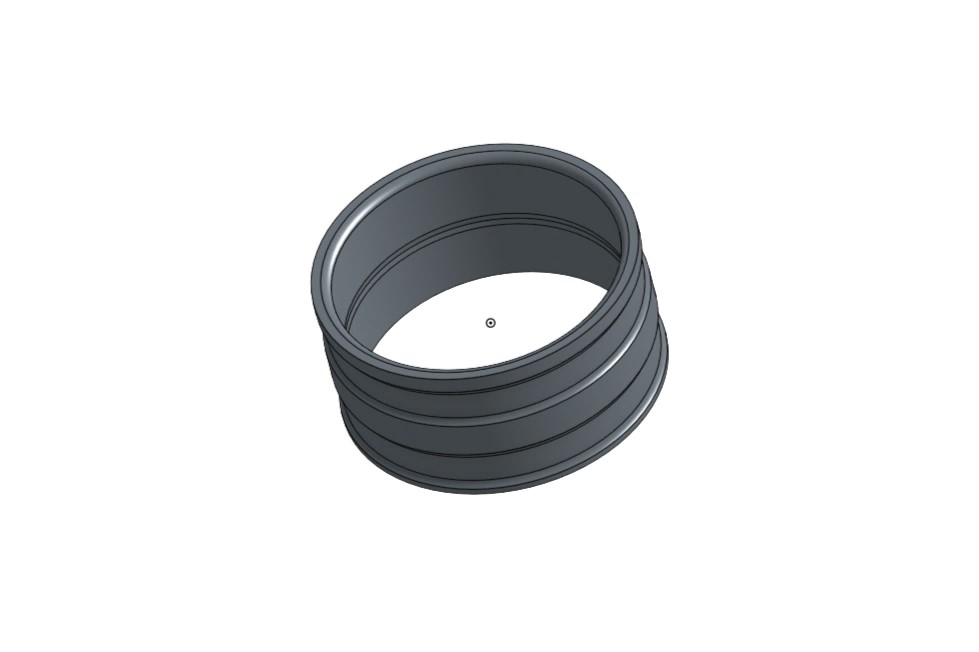

XR80 to XR100 Carb Adapter
This TPU adapter allows you to install a performance XR100 carburetor on your XR80 while retaining the OEM XR80 air boot and intake system. The design ensures a sealed, secure fit and enables a clean OEM-style upgrade for early 2000s Honda XR80 motorcycles.